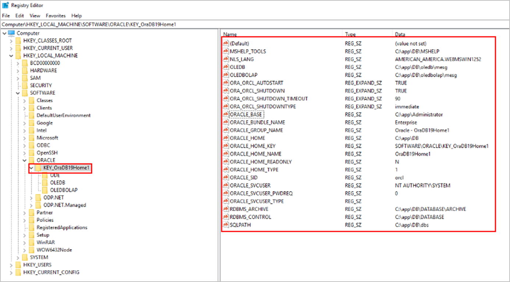

当Oracle主机中的环境变量注册表被误删后，导致管理界面上显示主机离线，数据库备份恢复任务失败。
操作步骤
- 请使用系统管理员登录Oracle数据库主机。
- 在键盘上按“Win+R”，打开运行窗口。
- 输入“regedit”，打开注册表，检查ORACLE注册内容是否正确，如不正确请修改正确。

其中“ORACLE_HOME”的值需增加至系统变量“Path”的值中，“Path”中该值为“ORACLE_HOME”的值加上“bin”，并用英文分号与其他路径分割。
例如：
ORACLE_HOME的值为：C:\app\oracle\product\12.1.0\dbhome_1，则系统变量Path对应值中需要有“C:\app\oracle\product\12.1.0\dbhome_1\bin”。
